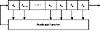
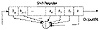

| Previous | Table of Contents | Next |
Linear congruential generators remain useful for noncryptographic applications, however, such as simulations. They are efficient and show good statistical behavior with respect to most reasonable empirical tests. Considerable information on linear congruential generators and their implementations can be found in [942].
Combining Linear Congruential Generators
Various people examined the combination of linear congruential generators [1595,941]. The results are no more cryptographically secure, but the combinations have longer periods and perform better in some randomness tests.
Use this generator for 32-bit computers [941]:
static long s1 = 1 ; /* A “long” must be 32 bits long. */ static long s2 = 1 ;
#define MODMULT(a,b,c,m,s) q = s/a; s = b*(s-a*q) - c*q; if (s<0) s+=m ;
/* MODMULT(a,b,c,m,s) computes s*b mod m, provided that m=a*b+c and 0 <= c < m. */
/* combinedLCG returns a pseudorandom real value in the range
* (0,1). It combines linear congruential generators with
* periods of 231-85 and 231-249, and has a period that is the
* product of these two prime numbers. */
double combinedLCG ( void )
{
long q ;
long z ;
MODMULT ( 53668, 40014, 12211, 2147483563L, s1 )
MODMULT ( 52774, 40692, 3791, 2147483399L, s2 )
z = s1 - s2 ;
if ( z < 1 )
z += 2147483562 ;
return z * 4.656613e-10 ;
}
/* In general, call initLCG before using combinedLCG. */
void initLCG ( long InitS1, long InitS2 )
{
s1 = InitS1 ;
s2 = InitS2 ;
}
This generator works as long as the machine can represent all integers between-231 + 85 and 231 - 85. The variables, s1 and s2, are global; they hold the current state of the generator. Before the first call, they must be initialized. The variable s1 needs an initial value between 1 and 2147483562; the variable s2 needs an initial value between 1 and 2147483398. The generator has a period somewhere in the neighborhood of 1018.
If you only have a 16-bit computer, use this generator instead:
static int s1 = 1 ; /* An “int” must be 16 bits long. */
static int s2 = 1 ;
static int s3 = 1 ;
#define MODMULT(a,b,c,m,s) q = s/a; s = b*(s-a*q) - c*q; if
(s<0) s+=m ;
/* combined LCG returns a pseudorandom real value in the
range
* (0,1). It combines linear congruential generators with
* periods of 215-405, 215-1041, and 215-1111, and has a period
* that is the product of these three prime numbers. */
double combinedLCG ( void )
{
int q ;
int z ;
MODMULT ( 206, 157, 21, 32363, s1 )
MODMULT ( 217, 146, 45, 31727, s2 )
MODMULT ( 222, 142, 133, 31657, s3 )
z = s1 - s2 ;
if ( z > 706 )
z -= 32362 ;
z += s3 ;
if ( z < 1 )
z += 32362 ;
return z * 3.0899e-5 ;
}
/* In general, call initLCG before using combinedLCG. */
void initLCG ( int InitS1, int InitS2, InitS3 )
{
s1 = InitS1 ;
s2 = InitS2 ;
s3 = InitS3 ;
}
This generator works as long as the machine can represent all integers between-32363 and 32363. The variables, s1, s2, and s3, are global; they hold the current state of the generator. Before the first call, they must be initialized. The variable s1 needs an initial value between 1 and 32362. The variable s2 needs an initial value between 1 and 31726. The variable s3 needs an initial value between 1 and 31656. This generator has a period of 1.6*1013.
For both of these generators, the constant term b in the linear congruence is 0.
Shift register sequences are used in both cryptography and coding theory. There is a wealth of theory about them; stream ciphers based on shift registers have been the workhorse of military cryptography since the beginnings of electronics.
A feedback shift register is made up of two parts: a shift register and a feedback function (see Figure 16.1). The shift register is a sequence of bits. (The length of a shift register is figured in bits; if it is n bits long, it is called an n-bit shift register.) Each time a bit is needed, all of the bits in the shift register are shifted 1 bit to the right. The new left-most bit is computed as a function of the other bits in the register. The output of the shift register is 1 bit, often the least significant bit. The period of a shift register is the length of the output sequence before it starts repeating.
Cryptographers have liked stream ciphers made up of shift registers: They are easily implemented in digital hardware. I will only touch on the mathematical theory. Ernst Selmer, the Norwegian government’s chief cryptographer, worked out the theory of shift register sequences in 1965 [1411]. Solomon Golomb, an NSA mathematician, wrote a book with Selmer’s results and some of his own [643]. See also [970,971,1647].
The simplest kind of feedback shift register is a linear feedback shift register, or LFSR (see Figure 16.2). The feedback function is simply the XOR of certain bits in the register; the list of these bits is called a tap sequence. Sometimes this is called a Fibonacci configuration. Because of the simple feedback sequence, a large body of mathematical theory can be applied to analyzing LFSRs. Cryptographers like to analyze sequences to convince themselves that they are random enough to be secure. LFSRs are the most common type of shift registers used in cryptography.
Figure 16.3 is a 4-bit LFSR tapped at the first and fourth bit. If it is initialized with the value 1111, it produces the following sequence of internal states before repeating:

Figure 16.1 Feedback shift register.

Figure 16.2 Linear feedback shift register.
The output sequence is the string of least significant bits:
An n-bit LFSR can be in one of 2n - 1 internal states. This means that it can, in theory, generate a 2n - 1-bit-long pseudo-random sequence before repeating. (It’s 2n - 1 and not 2n because a shift register filled with zeros will cause the LFSR to output a neverending stream of zeros—this is not particularly useful.) Only LFSRs with certain tap sequences will cycle through all 2n - 1 internal states; these are the maximal-period LFSRs. The resulting output sequence is called an m-sequence.
| Previous | Table of Contents | Next |
){kind=link}
){kind=link}
){kind=link}
){kind=link}